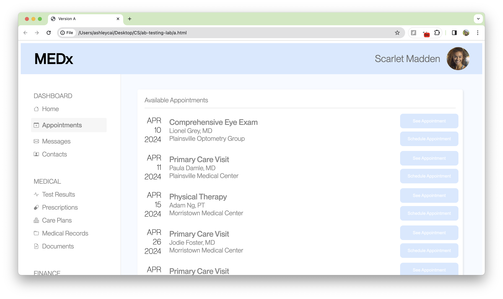
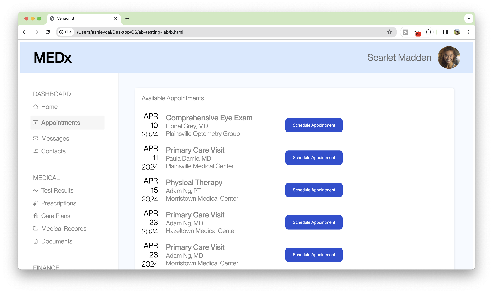
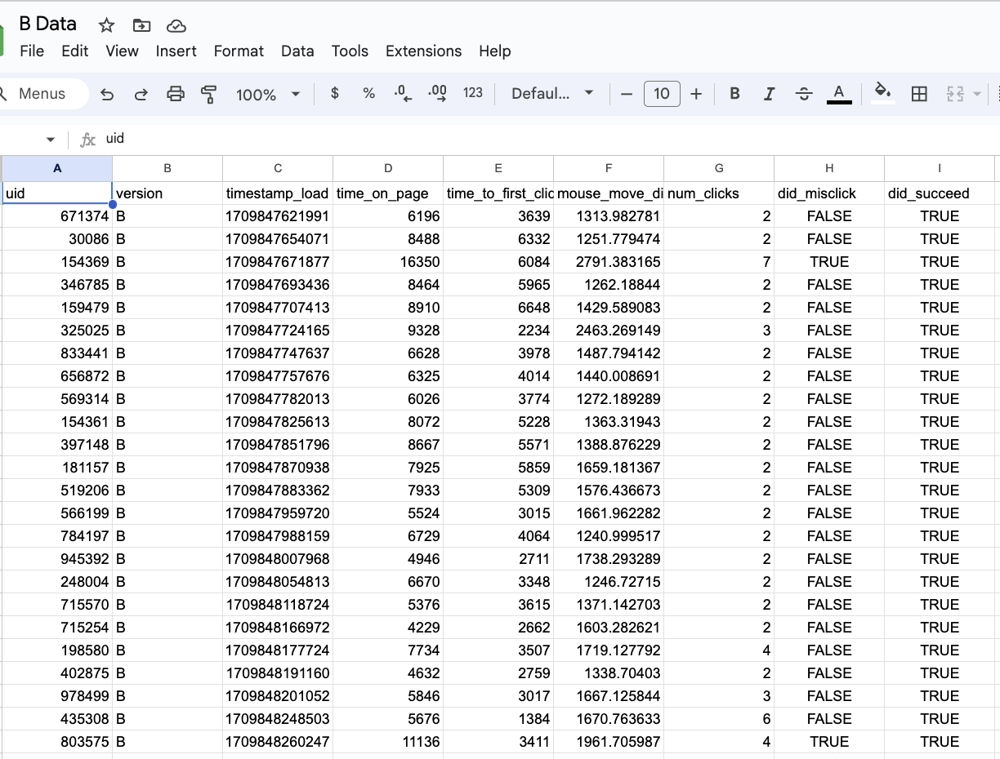
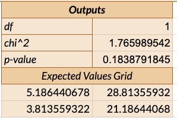
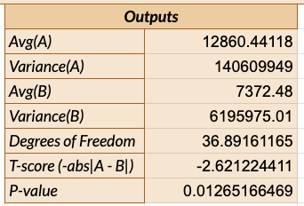
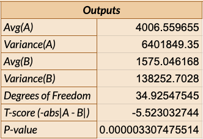

A/B Testing Project
Overview
This was a one-week exercise looking into A/B testing and how it can be a great tool for late stage usability research. When you already have a working prototype of a product or product, it is useful to be able to efficiently and quantitatively test the effectiveness of small changes in a user experience and compare versions directly against each other. In this project, we simulated the experience by making a small change to a website where users had to book an appointment with a doctor on a specific day, and had our classmates test both versions.
Site Versions and Data Collection
Version A: original

Version B: color, button, and ordering of appointment changes

Data

Analysis
Hypotheses
Misclick Rate
Null Hypothesis: Users misclick before completing the task using Version A of the site at the same rate as when using Version B of the site.
Alternative Hypothesis: Users misclick more completing the task using Version A of the site at a different rate than when using Version B of the site.
I changed the order of the appointment dates to make them entirely chronological and removed the “see appointment” buttons, which would potentially decrease the misclick rate.
Time on Page
Null Hypothesis: Users spend the same amount of time when completing the task using Version A of the Site as when using Version B of the site.
Alternative Hypothesis: Users spend a different amount of time when completing the task using Version A of the Site as when using Version B of the site.
I made the buttons to schedule the appointment brighter/higher contrast, which would make it easier for a user to register and click, potentially decreasing time on page.
Mouse Distance(chosen metric)
Null Hypothesis: Users move their mouse the same distance when completing the task using Version A of the Site as when using Version B of the site.
Alternative Hypothesis: Users move their mouse a different amount when completing the task using Version A of the Site as when using Version B of the site.
I moved the buttons closer to the descriptions of the appointment, so perhaps that decreased the amount of mouse movement on the site in total
Personal Prediction
Because of the inconsistency of the data and the structure of the A/B Testing lab (we had all seen and used Version A prior to using it for the test, and had never seen any Version B that was created by our classmates prior to using it for the test), I think that the speed of use for Version A is faster than it would have been in a normal A/B testing trial, and all of my alternative hypotheses will likely be rejected.
Test Results
Misclick rate chi-squared test

Time on page two-tailed t-test

Mouse movement two-tailed t-test

Summaries
Misclick rate chi-squared test
I ran a X2 test, which is a categorical test, for misclick rate, because we measured it as a categorical variable (True/False). According to the test, the difference between versions A and B are not statistically significant.
The degrees of freedom was 1, X2 was 1.7659, which indicates a small difference between the two versions, and the p-value was 0.1838, which is higher than the threshold value of 0.05.
Thus, we failed to reject the null hypothesis, meaning that it is likely that users misclicked using versions A and B at similar rates.
Time on page two-tailed t-test
I ran a two-tailed T-test, which is a continuous, two directional test, for time on page because I was trying to find out if users used version B differently than version A. I used a two-tailed test because I did not want to eliminate the prospect of A being faster than version B. According to the test, the difference between versions A and B is statistically significant.
The degrees of freedom was 36.89, T-score was -2.62, which indicates the version B had shorter usage than version A, and the p-value was 0.01265, which is lower than the threshold value of 0.05.
Thus, we find statistically significant evidence that the alternative hypothesis is true, meaning that it is likely that users spent different amounts of time when using versions A and B.
Mouse movement two-tailed t-test
I ran a one-tailed T-test, which is a continuous, two directional test, for mouse distance because I was trying to find out if users used their mouse differently on version B than on version A. I used a two-tailed test because I did not want to eliminate the prospect of A being shorter than version B. According to the test, the difference between versions A and B is statistically significant.
Thus, we find statistically significant evidence that the alternative hypothesis is true, meaning that it is likely that users moved their mouse a different amount when using versions A and B.
The degrees of freedom was 34.92, T-score was -5.52, which indicates the version B had lower mouse movement than version A, and the p-value was 0.0000033, which is lower than the threshold value of 0.05.
Thus, we find statistically significant evidence that the alternative hypothesis is true, meaning that it is likely that users moved their mouse a different amount when using versions A and B.
General Summary Statistics
In total, I had 34 data rows on version A and 25 data rows on version B. The mean time on page for A was 15945.125 ms, versus only 7372.48 ms on version B, however the mode for version B was 11850, and for version B was 6670 ms seconds, which both show significant differences. However, the high variation between median and mode in version A indicate that there was a wider spread of values for version A. The mean for mouse movement on A was 4349.145547 versus on B was 1575.046168, and the median was 3937.022682 and 1456.321434, respectively, which also show significant differences. The misclick rate for version A was 7/34 and for version B was 3/25, so not a clear significant difference.